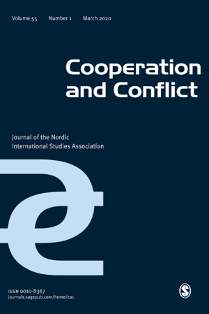

收录于合集 #新刊速递 123个

期刊简介

Cooperation and Conflict（《合作与冲突》）是发行超过50年的同行评议期刊，内容传统上集中于北欧和欧洲事务。该刊信奉学术多元主义，因此不代表任何一种特定的研究方法、研究路径、学术传统和学术流派。根据2018Journal Citation Reports显示，其影响因子为1.877，位列“国际关系”类别期刊第21位。
本期编委
【 编译 】晋玉 周心培 缪高意 李雯珲 胡贺 朱文菡 赵柳希
【 审校 】阮含含 杨帆 虞敷扬 胡贺 李雯珲 赵柳希 缪高意
【 排版 】高佳美
本期目录
1. 建设有能力的国家：欧盟能力建设中富有争议的话语和实践 ****
Constructing the capablestate: Contested discourses and practices in EU capacity building
2. 与邪恶合作？和平行动中的问责制与联合国人权尽职调查政策的演变
Cooperating with evil? Accountability in peace operations and the evolution of the United Nations Human Rights Due Diligence Policy
3. 边境的日常生活：沿 “ 巴尔干路线 ” 审视国际政治的视觉、物质和空间交叉点
The Everyday at the border: examining visual, material and spatial intersections ofinter national politics along the ‘Balkan Route’
4. 没有翅膀？军民关系与代理人介入战斗机采购
No wings attached?Civil–military relations and agent intrusion in the procurement of fighter jets
5. 民族民粹主义和性别警惕主义：以芬兰的奥丁士兵案为例
National populism and gendered vigilantism: The case of the Soldiers of Odin in Finland
6. 以色列“鹰派”和“鸽派”总理的外交政策特征
Features of foreignpolicy birds: Israeli prime ministers as hawks and doves
7.生物识别选民登记：一种民主援助的新形式？
Biometric voter registration: A new modality of democracy assistance?
1.
建设有能力的国家：欧盟能力建设中富有争议的话语和实践
【 题目 】Constructing the capablestate: Contested discourses and practices in
EU capacity building【 作者 】Timothy Edmunds, Ana E Junco（布里斯托大学）【 摘要
】能力建设作为在冲突后脆弱的环境中促进安全与发展的一种方式，在国际社会中日益突出。能力建设旨在试图促进一种自下而上的方法，以利用、加强现存的地方能力。本文认为，能力建设可以理解为一种更广泛的治理术（governmentality），它试图从外部确定什么构成了一个“有能力的”主体。然而，因受当地政府参与其中的方式的不断影响，这些治理实践（实施能力建设举措）的效果并不明显。本文通过波斯尼亚、科索沃和索马里地区的政策文件和访谈记录，探究欧盟在这些发生过冲突的环境中有怎样的能力建设举措（initiatives）。通过研究这些话语（能力建设）背后蕴藏的合理性和问题（problematisations，本文指缺乏制度、权力和运作“有能力的国家”的专业知识这三个问题）,本文揭示了这样的假设（帮助冲突后国家建设国家能力的国际成员会基于需要帮助的当地国家缺乏制度、权力和知识的假设使用一种西方模式）在实践中对地方和国际之间的互动及竞争的作用，从而得出新的结论，（这样的假设）既不能直接反映现状，也不能代表外部能力建设者可以线性地施加权力。
Capacitybuilding has risen to prominence in the vocabulary of the
internationalcommunity as a way to promote security and development in fragile
andpost-conflict environments. Capacity building seeks to promote a bottom-
upapproach drawing on and strengthening existing local capacities. This
articleargues that capacity building can be understood as part of a
broadergovernmentality that seeks to determine from the outside what
constitutes a‘capable’ subject. However, the effects of these governance
practices are notstraightforward as they are constantly shaped by the way
local actors on theground engage with these. Drawing on both policy documents
and interviewsconducted in Bosnia, Kosovo and Somalia, the article examines
European Unioncapacity building initiatives in these post-conflict
environments. By examiningthe rationality and problematisations behind this
discourse, the articleunveils how such assumptions (in particular, regarding
the lack ofinstitutions, power and knowledge) result in interactions and
contestation betweenthe local and the international in practice, which lead to
new outcomes thatneither straightforwardly reflect the existing status quo nor
represent alinear imposition of power by external capacity builders.
【 编译 】晋玉【 审校 】阮含含
2.
与邪恶合作？和平行动中的问责制与联合国人权尽职调查政策的演变
【 题目 】Cooperating with evil? Accountability in peace operations and the evolution of the United Nations Human Rights Due Diligence Policy
【 作者 】Gisela Hirschmann（莱顿大学政治学研究所国际关系助理教授）
【 摘要 】为实施全球性决策和政策，国际组织常与国家行为体合作。但由于一些国家越来越频繁遭到严重侵犯人权的指控，这种合作已千疮百孔。本文分析了对联合国和平行动东道国如何追责。我认为，现代维和行动的复杂限制了传统问责机制的适用。为此，我开发了一个概念模型来代替并演示不同问责制如何相互作用和互相弥补。此外，我还以联合国“人权尽职调查政策（HRDDP）”的出现作案例研究进行说明。联合国在刚果民主共和国和平行动中，联合人权股、联合国人权理事会特别程序和国际刑事法院规定的问责框架威胁联合国维和行动的合法性。因此，联合国采用人权尽职调查作为新的以联合国为基础的问责机制追究执行伙伴的责任。
International organizations (IOs) usually cooperate with national actors in order to implement global decisions and policies.This cooperation has become proble matic as implementing partners have increasingly been accused of serious human rights violations. This article analyzes how implementing partners from the host state of a United Nations (UN) peace operation are held accountable. I argue that the complexity of contemporary peacekeeping limits the availability of traditional account ability mechanisms. I develop a conceptual model to demonstrate how, instead, different account ability forms interact and complement each other. I illustrate this interplay of accountability with a case study on the emergence of the UN HumanRights Due Diligence Policy (HRDDP). The accountability framework enacted bythe Joint Human Rights Unit, the Special Procedures of the UN Human Rights Council and the International Criminal Court in the context of the UN peace operation in the Democratic Republic of the Congo threatened the legitimacy of UN peacekeeping. As a consequence, the UN adopted the HRDDP as a new, UN-based account ability mechanism to hold implementing partners from the host state of peace operations accountable.
【 编译 】周心培
【 审校 】杨帆
3.
边境的日常生活：沿 “巴尔干路线”审视国际政治的视觉、物质和空间交叉点
【 题目 】The Everyday at the border:examining visual, material and spatial intersections of international politics alongthe ‘Balkan Route’
【 作者 】Jelena Obradovic-Wochnik（阿斯顿大学）；GemmaBird（利物浦大学）
【 摘要 】本文审视国际政治中视觉、空间和物质的交叉点，分析在“巴尔干路线”向欧洲迁移中生产和展示的“日常”物品的遭遇，包括官方和政府标志、通知、海报、地图、传单、指示以及支援团体和志愿者所做的非正式对应。我们将这些物品视为国际政治中的“事物”和“东西”，分析它们如何利用视觉效果来治理空间，并影响划界和抵抗活动。就国际关系中的“微观政治”而言，我们将难民“危机”的物品——地图、传单、海报、指示、标志——定义为“在我们正常的简略或二元框架中遗忘的社会生活特征”，它们是“琐碎的”；但是，如果将其与欧盟边境治理联系起来考虑，则可以揭示宏观政治和宏观结构。
This paper examines the intersections of visual, spatial and material ininternational politics, analysing encounters with ‘everyday’ objects produced and displayed along the so-called ‘BalkanRoute’ of migration through Europe: official and government signs, notices, posters, maps, flyers, and directions, as well as their less formal counterparts made by solidarity groups andvolunteers. We examine these objects as the ‘things’ and ‘stuff’ of international politics , analysing how their visual effects govern space and are implicatedin acts of bordering and its resistance. We define the objects of the refugee ‘crisis’- maps, flyers, posters, directions, signs - in terms of ‘micropolitics’ of international relations, the ‘features of social life that slip through our normal schematic or binary frameworks’ and are treated as ‘‘little nothings’; but, when considered in relation to EU border governance, can shed light on macropolitics and macrostructures.
【 编译 】缪高意
【 审校 】虞敷扬
4.
没有翅膀？军民关系与代理人介入战斗机采购
【 题目 】No wings attached?Civil–military relations and agent intrusion in the procurement of fighter jets
【 作者 】Yf Reykers（马斯特里赫特大学助理教授），DaanFonck（鲁汶大学博士研究员）
【 摘要 】本文研究了国防采购中的军民关系。通过运用委托- 代理模型，作者认为，国防采购决策在本质上容易受到代理的影响。考虑到这些卷宗档案的技术性质，各国政府和议会往往严重依赖军事专业知识，从而为国防行政部门创造余地，使其在决策过程中倾向于自己的意愿。通过对比利时替换F-16战斗机的案例研究，我们考察了复杂的国防采购卷宗档案，探索从国防行政部门到国防部长是否以及如何通过战略信息管理利用所掌握的专业知识。此外，经验主义揭示了代理入侵的一种至今未被探索的现象，即这样一种情况：一个代理人在其政治委托人的决策机构中担任重要的正式咨询职位，通过实施额外的手段，使其信息优势超过委托人，从而服务于自身的利益。
This article studies civil–military relations in defence procurement. Applying in sights from the principal–agent model, we argue that decision-making about defence procurement is inherently vulnerable to agency problems. Given the technical nature of these dossiers, governments and parliaments are often heavily dependent upon military expertise, creating leeway for defence administrations to steer decision-making towards their preferences. By means of a case study ofthe replacement of the F-16 fighter jets in Belgium, we examine whether and how complex defence procurement dossiers allow for exploitation of expertise through strategic information management from the defence administration to the Minister of Defence. In addition, empirics reveal a to date unexplored phenomenon of agent intrusion. It captures the situation in which an agent takes a prominent formal advisory position within the decision-making apparatus of its political principal, providing additional means to outplay its information advantage over the principal in favour of its own interests.
【 编译 】李雯珲
【 审校 】胡贺
5.
民族民粹主义和性别警惕主义：以芬兰的奥丁士兵案为例
【 题目 】National populism andgendered vigilantism: The case of the Soldiers of Odin in Finland
【 作者 】Sarai B Aharoni（本·古里安大学助理教授），Élise Féron（坦佩雷和平研究所高级研究员）
【 摘要 】 通过2015-2018年间各种媒体对于芬兰右翼街头巡逻组织奥丁士兵（SOO）报道的话语分析，作者对当代警惕主义的性别层面进行了初步探索。作者发现街头巡逻作为警惕主义的一种实践，通过利用城市空间作为当地人和外来者双方之间摩擦的场所以及把街道作为制定性别和种族/民族的身份的场所实现合理化。作者的发现表明，奥丁士兵（SOO）的警惕主义实践兼有传统与新男性主义的特征。作者认为，反移民团体的活动，例如芬兰的奥丁士兵（SOO）展现了女权主义的安全困境。即基于性别的公共暴力成为增强白人男子气概的一种军事表现。作者确定了四个反复出现的主题，这些主题被群体成员用来描述自己以证明自身属于合法的社会运动：保护性男性气概，军事化男性气概，国家的一种补充力量和原著男性气概。
Based on a discursive analysis of various media reports published in 2015–2018 by and about the Finnish right-wing street patrolling organization Soldiers of Odin (SOO), we explore the gendered dimension of contemporary vigilantism. We find that street patrolling as apractice of vigilantism, is justified in this case by using representations of the city space as a place of friction between locals and new comers and of the street as a locus for enacting gendered and racial/ethnic identities. Our findings suggest that SOO’s vigilant practices exhibit a mixture of traditionaland new features of masculinity. We argue that the activities of anti-immigration groups such as the SOO in Finland demonstrate a feminist security dilemma concerning the way securitization of public gender-based violence is used to enhance militarized performance of white masculinity. We identify four recurring themes that are used by group members to portray themselves as partof a legitimate social movement: protective masculinity, militarized masculinity, supplement of the state, and indigenous masculinity.
【 编译 】胡贺
【 审校 】李雯珲
6.
以色列“鹰派”和“鸽派”总理的外交政策特征
【 题目 】Features of foreignpolicy birds: Israeli prime ministers as hawks and doves
【 作者 】Baris Kesgin（埃隆大学政治学和政策研究中心）
【 摘要 】长期以来，学者和政策制定者通过“鹰派”和“鸽派”来简单划分具有特定政治倾向的领导人特质：“鹰派”通常被认为是右翼，在外交政策上更具侵略性；而“鸽派”则是左翼，外交政策更为和平。本文认为，合理探讨“鹰派”和“鸽派”外交政策，需要对其政治领导力进行研究分析。本文拒绝一刀切的“鹰派”和“鸽派”二分法，并使用领导力特征分析（trait analysis）来研究“鹰派”和“鸽派”领导人的特质。本文通过其用以形容以色列的国内外事务以及其合作与冲突行动的词语，来剖析自冷战结束以来国家安全背景下的以色列总理们的特质。本文的研究成果有助于通过政治领导力研究方法来解析“鹰派”和“鸽派”这样的标签。本文还强调了复杂性和不信任感对于理解“鹰派”和“鸽派”领导人的重要性。本文发现“鹰派”比“鸽派”的思维方式更直接，对他者的怀疑也更多。本文认为未来研究将受益于这种比简单的二分法更深入的类型研究，并探索外交政策中“鹰派”和“鸽派”领导人个人层面的测量方法。
Scholar sand policymakers have long used the shorthand of hawks and doves to characterize leader personalities that correspond to a particular political inclination, whereby hawks are considered right-wing and more aggressive in foreign policy, and doves are left-wing and more peaceful. This article posits that a sound discussion of who hawks and doves in foreign policy are requires an engagement with research on political leadership. It promises a less superficial understanding of the dichotomy of hawks and doves, and uses leadership trait analysis to explore hawkish and dovish leaders’ qualities. The article profiles Israel’s prime ministers since the end of the Cold War, where in a high security environment, these words are most often used to describe its domestic and foreign matters and its cooperative and conflictual actions. This article’s findings encourage an unpacking of these commonly used short handlabels with political leadership approaches. They are also useful to highlight, most notably, the significance of complexity and distrust in understanding hawkish and dovish leaders. Hawks think simpler and are more doubtful of others than doves, this article finds. Future research, the article suggests, will benefit from looking deeper than simple, dichotomous use of this analogy, and exploring ways to operationalize individual-level measurements of hawks and doves in foreign policy.
【 编译 】朱文菡
【 审校 】赵柳希
7.
生物识别选民登记：一种民主援助的新形式？
【 题目 】Biometric voter registration: A new modality of democracy assistance?
【 作者 】Katja LindskovJacobse（哥本哈根大学）
【 摘要】 有人认为，我们正在见证民主促进过程中自由干涉主义的倒退。在联合国开发计划署等机构的支持下，非洲各地开始推广生物识别选民登记技术（biometric voter registration）。本文着眼于此，指出这并非是一种倒退，而似乎是一种新的，更容易促进自由民主的方式。通过对肯尼亚大选中使用生物识别选民登记技术的分析，文章说明了这一技术发展的一些关键意义。在地区层面，由生物识别选民登记技术建构起的“解决方案”，忽视了肯尼亚民主选举中的重大挑战。在全球层面，生物识别选民登记技术的推广加剧了全球权力结构的不平等。例如，不断使更多非洲国家成为试验这项技术的实验室，由于担心黑客入侵，美国撤回了该技术。为了提出这一论点，本文结合了最近关于自由干涉主义形势的争论以及米歇尔•福柯（Michel Foucault）和希拉•贾萨诺夫（Sheila Jasanoff）对技术政治的见解。
It has been argued that we are witnessing a retreat from democracy promotion in liberal interventionism. Focusing on the roll-out of biometric voter registration (BVR) across Africa, as supported by institutions such as the United Nations Development Programme, this article suggests that rather than a retreat we are seeing the emergence of a new and seemingly lighter approach to liberal democracy promotion. Through an analysis ofthe use of BVR in Kenyan elections, the article illustrates some key implications of this development. At the local level, the framing of BVR as a ‘solution’ omits important challenges to democratic elections in Kenya. At the global level, the roll-out of BVR reinforces unequal global power structures, for example by constituting an increasing number of African states aslaboratories for the trialling of a technology which, due to fears of hacking, has now been rolled back in the US. To make this argument, the article combine sinsights from recent debates about the state of liberal interventionism, within sights from Michel Foucault and Sheila Jasanoff about the politics oftechnology.
【 编译 】赵柳希
【 审校】 缪高意
【新刊速递】第12期 | International Affairs, Vol.95, No.6，2019
【新刊速递】第13期|Chinese Journal of International Politics, No.4, 2019
【新刊速递】第14期|Chinese Journal of International Politics, No.3, 2019
【新刊速递】 第15期 | International Organization, No.4, 2019
【新刊速递】第16期 | International Studies Quarterly, No.4, 2019
【新刊速递】第17期 | World Politics, Vol.72, No.1, 2020
【新刊速递】 第18期 | Security Studies Vol.28, No.5, 2019
【新刊速递】第19期 | Review of International Studies, No.1, 2020
【新刊速递】第20期 | International Studies Quarterly, No.4, 2019
【新刊速递】第21期 | International Studies Quarterly, No.4, 2019